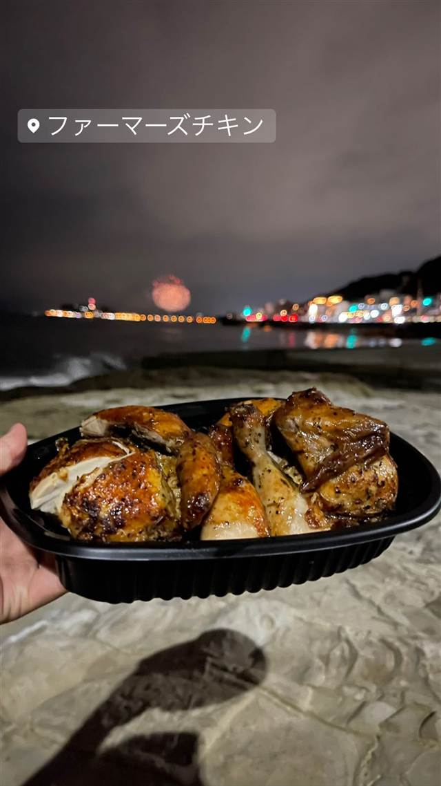

肉料理 · 山鼻
ファーマーズチキン 札幌山鼻店
15種のハーブを効かせた、外パリ中ジューシーなロティサリーチキン
ファーマーズチキン
2010年に東京・田町で生まれたロティサリーチキン専門店チェーンの札幌店。15種のハーブを効かせた丸鶏のロティサリーチキンが看板で、外はパリッと中はジューシーに焼き上げる。
TRIVIA
豆知識
- 東京・田町発祥のチェーンが2021年に札幌へ進出した店舗
- 香草は15種類をブレンドして使用
REVIEWS
世間の評判
3.28食べログ
香り高いスパイスロティサリーチキン
- 15種以上のスパイスでマリネしたロティサリーチキンの香りと味を評価する声が多い
- スパイスのきいたチキンがビールとの相性が良いという声が目立つ
- 駐車スペースが限られており停めにくいという指摘もある
食べログ
| 創業 | チェーン1号店は2010年4月に東京都港区田町にオープン。札幌山鼻店は2021年5月オープン。 |
|---|---|
| 系譜 | 東京発祥のロティサリーチキン専門店チェーン。 |
| 看板 | ロティサリーチキン |
| こだわり | ローズマリーを中心に厳選した15種類のハーブを使用し、「外はパリッと、中はジューシー」に焼き上げる。常時焼きたてを提供。 |
| どこから | 遠方 |
| 営業時間 | 月〜日 11:30-21:00 |
| 予算 | 昼 ¥1,000～¥1,999 夜 ¥1,000～¥1,999 |
| 場所 | 市電 山鼻9条停留場 北海道札幌市中央区南十三条西14-3-26 スイスビル1F |
| メモ | テレビ番組「タカトシランド」（2021年5月28日放送）で紹介されたことがある。市電山鼻9条停留場そば。 |
食べたもの：ローストチキン海辺